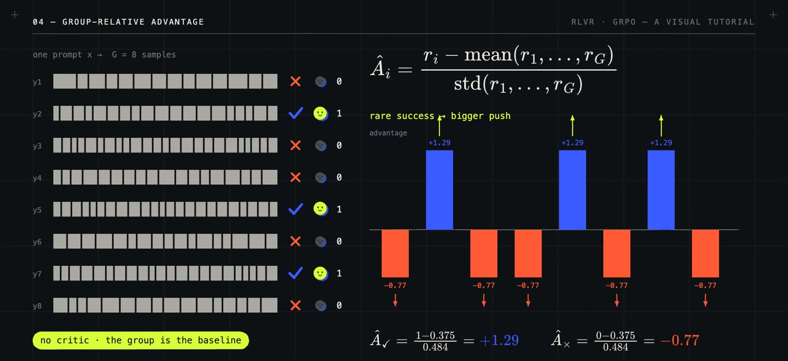

/ 6:53 VIDEO · 3 MIN READ
RLVR with GRPO:
sample, verify, reinforce.
Two ideas made today's reasoning models. The first is chain of thought: Wei et al. (2022) showed that asking a model to write out intermediate steps before its answer improves maths and logic. The second is spending more computation at test time. Noam Brown had seen this in games: his poker programs Libratus (2017) and Pluribus (2019) beat top professionals largely by searching before each decision, and he argued that letting a model think longer can buy as much as training a far larger one. He joined OpenAI in 2023 to work on this, and it became o1 (September 2024): a model trained with large-scale reinforcement learning to produce long chains of thought, whose accuracy keeps rising the longer it thinks. The name reinforcement learning with verifiable rewards (RLVR) comes from Tülu 3 (November 2024), and in January 2025 DeepSeek-R1 showed in an open paper that long reasoning can emerge from this training alone, using Group Relative Policy Optimization (GRPO), an algorithm introduced a year earlier in DeepSeekMath.
RLVR trains a model on tasks where a program can check the answer, such as maths problems with known solutions or code with unit tests, and it is the recipe behind reasoning models. The next step was tools. With o3 (April 2025), models were trained to search the web, run code and call other tools in the middle of their chain of thought, and the same recipe applies, with the tool calls and their results as part of the attempt. A checker is cheap and hard to argue with, but it only exists for tasks whose answers can be checked.
The model, called the policy \(\pi_\theta\), samples a completion \(y\) for a prompt \(x\), and the checker returns a reward \(r = 1\) if it is correct and \(0\) otherwise. To learn, the model must know which completions to make more likely. Proximal Policy Optimization (PPO) trains a second network, a critic, to predict the expected reward. GRPO drops the critic. It samples a group of \(G\) completions for the same prompt and uses the group as the reference, \[\hat A_i = \frac{r_i - \operatorname{mean}(r_1, \dots, r_G)}{\operatorname{std}(r_1, \dots, r_G)}.\] A completion is pushed up only for being better than its siblings. With 3 correct out of 8, the mean is 0.375 and the standard deviation 0.484, so correct completions get +1.29 and wrong ones −0.77. If all eight are right, or all wrong, every advantage is zero and the prompt teaches nothing, so prompts of intermediate difficulty carry the signal.

The update keeps PPO's clipped form. Each token \(y_{i,t}\) carries the ratio of its new to its old probability, \(\rho_{i,t} = \pi_\theta(y_{i,t} \mid x, y_{i,\lt t}) / \pi_{\text{old}}(y_{i,t} \mid x, y_{i,\lt t})\), and the objective is \[J(\theta) = \frac{1}{G} \sum_{i=1}^{G} \frac{1}{|y_i|} \sum_{t} \min\Big(\rho_{i,t}\, \hat A_i,\; \operatorname{clip}(\rho_{i,t}, 1-\epsilon, 1+\epsilon)\, \hat A_i\Big),\] often with a small Kullback–Leibler (KL) penalty towards a reference model. The clip stops one batch from moving any probability too far. The same advantage is copied onto every token, so the useful steps and the mistakes get the same push: credit assignment is coarse by design. For tool use, tool outputs stay in the context but are masked out of the loss, because the model did not write them. When generation runs asynchronously, completions come from an older sampler \(\mu\), and the ratio splits in two, \(\pi_\theta / \mu = (\pi_\theta / \pi_{\text{old}}) \cdot (\pi_{\text{old}} / \mu)\); AReaL truncates the second factor, trading a little bias for less variance.
RLVR only works where a reliable checker exists, and one outcome reward says nothing about which step was wrong. The normalization is also still debated. Dr. GRPO shows that dividing by the completion length favours long wrong answers, and that dividing by the group's standard deviation over-weights questions that are almost always solved or almost always failed. DAPO proposes further changes for large-scale training.